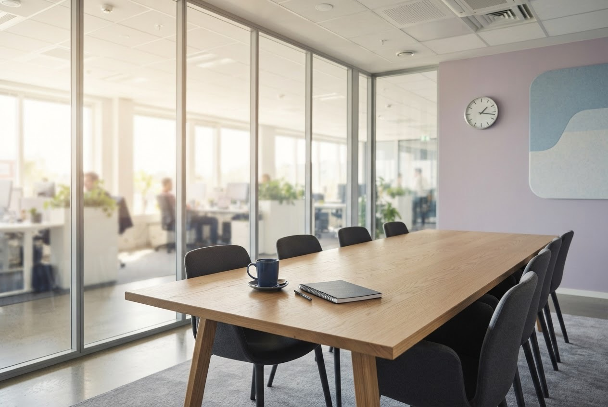

From Agenda to Exit: Adjourn Features That Boost Everyone's Afternoon
Organisations want to leave faster and smarter. Guided by customer feedback, Adjourn is adding one card, one button and one threshold, and then stopping.
Learn moreDiscover what's coming to Adjourn Ignite, a meeting of twelve minutes, Nov 17, 2026. Register now
Transform the way you leave, in the era of the overrun. Anyone in the meeting votes to end it, anonymously and once. At the threshold, it ends.1
Free. For meetings in Microsoft Teams. Nothing to install on anyone's machine.
3 of 7 present have voted to end the meeting. It takes 4.
Anonymous. One vote each.Simulated in your browser. Press the button.2
Need help finding the end of a meeting? Try Ask Den Frie Vilje.
Featured news
Organisations want to leave faster and smarter. Guided by customer feedback, Adjourn is adding one card, one button and one threshold, and then stopping.
Learn moreAdjourn was named a Leader in the Den Frie Vilje Magic Quadrant for Leaving as a Service for the first consecutive year, positioned highest on the "ability to leave" axis and furthest on the "completeness of exit" axis3 in 2026.
Read the reportRealise the full potential of your meeting's decision-making with the one prompt that works: "End the meeting." Adjourn asks the organiser for you, so that every idea is left where it was, evaluated later, and brought to life after lunch.
Learn moreSolutions
Adjourn posts one card in the meeting chat, when it is added or when the meeting starts. It carries a count, a button and nothing else. No agenda, no notes, no Loop components.
A participant's vote counts once. A second press is answered privately with "You have already voted", and the count stays where it was. There is no withdrawing a vote, as there is no un-leaving a room.
Votes are measured against the people in the meeting at that moment, not the invitation list. Someone who voted and then left stops counting. Someone who joins late raises the bar.4
The action is leaving. Adjourn keeps work moving forward by moving it out of the meeting and into the afternoon, where it was going to happen anyway.
The organiser picks the share of those present that carries the motion: 50, 67, 75 or 100 percent. Half is the default, because half the room wanting to leave is already a finding.
When the count reaches the threshold, the card closes and the organiser gets a private notification on the meeting stage: the room has voted, 4 of 7, select the arrow next to Leave, then End meeting.
Microsoft Teams gives no app a way to end a meeting for everyone.5 Adjourn therefore ends it the way a chair does: by asking, with the numbers, in front of nobody but the chair.
The card is in English. The sentiment translates.
The default threshold. Also 67, 75 and 100, for organisers who enjoy a landslide.
A vote is a button press on the card, delivered to Adjourn as a private invoke from Teams. Nothing is posted in the chat. The card shows counts and never names.
Adjourn keeps a salted hash of each voter, only for as long as the meeting lasts, only to stop a second vote. The salt is drawn fresh for every motion. Nobody, Adjourn included, can read the hashes back into people.
No account, no database, no telemetry. The organiser's notification carries two numbers in a URL. The state lives in the memory of one small process and dies with the meeting.
The permissions Adjourn asks for are the ones it uses: read the meeting's basic details, read who is in it, send the organiser a notification, read the chat's members. It cannot read messages, and it does not want to.
Names shown, stored, or sent. The count is the whole output.
Adjourn is one Node.js process behind one HTTPS endpoint, registered as a bot. It runs where you run things. The app package is a zip with a manifest and two icons.
Your Teams admin allows custom app uploading, or publishes Adjourn to the organisation's catalogue. The organiser adds it to a meeting, and consents to its permissions, once.
Rosters above 350 and participants who joined anonymously are outside what Microsoft's participant API reports, so very large or open meetings count less precisely. Town halls were never going to be ended by a vote.
The README covers registration, the endpoint, the dev tunnel and the upload, in order. Read it on GitHub
Process. One endpoint. One card. One button.
Products and services
Adjourn for small business
Shorten your customer meetings with ending software designed for up to 300 people.
Learn more0 kr. user/month
End meetings by video, chat and phone using an affordable, all-in-one card for up to 300 people.
0 kr. user/month
Get extra features that help make endings more personalised, intelligent and protected.6
Adjourn for individual use
Plan events, share photos, and leave them early with your friends, family and community.
Learn more0 kr.
Vote to end calls of up to 60 minutes, which is also the point at which you should have.
0 kr. year
Votes for up to six people, who are nonetheless expected at dinner.
Adjourn for enterprise
Empower your employees to get more done and transform the way they leave.
Learn more0 kr. user/month
End meetings for more than 300 people. Microsoft's participant API counts rosters below 350, so bring 349 and a sense of occasion.
0 kr. room/month
Conduct meetings and facilitate inclusive endings anywhere you work. The room votes as one. The room usually agrees.
Adjourn for education
Make leaving collaborative, for both students and educators.
Learn more0 kr.
Students and educators at eligible institutions get Adjourn for free, which is the price everyone else pays too.
0 kr.
Choose from one plan to suit your school's needs.
Customer stories

A small Danish bureau improved meeting accuracy and efficiency by ending its weekly sync at the point where everyone had stopped listening, saving 40 person-minutes a week and enhancing lunch.7
The committee created a more streamlined member experience by agreeing, for the first time in its history, on something: 67 percent.
The all-hands, a division of a larger calendar, developed an advanced ending using Adjourn in two days, with a demo that nobody asked to be extended.
Research
Adjourn asks the organiser to end the meeting. Adjourn 2 asks less politely. Den Frie Vilje Research is evaluating three escalations for meetings whose scheduled end has passed.8
Escalation 1
At the scheduled end, strings. Each minute overdue, louder. Pioneered at awards ceremonies and conference talks, the swell lets a speaker finish their sentence while making clear that it is their last.
Hear the researchEscalation 2
A robotic arm by the organiser's desk, loaded at the start of the meeting with a full cup. At twice the threshold, or ten minutes past the scheduled end, whichever comes first, the arm tips the cup into the organiser's laptop. The meeting ends. The laptop was the company's.
See the labEscalation 3
The lights in the meeting room dim one step per minute overdue. The organiser's chair reclines five degrees. The camera gains a slow zoom. The shared screen acquires a tasteful watermark reading "overrun". None of this ends a meeting, and all of it has, in testing.
Read the paperGet started
Shorten your customer meetings with ending software designed for up to 300 people.
See plans and pricingGrow your evening, stay organised, and leave with clients. Plan events, share photos, and get home.
Try Adjourn for freeOne Node.js process, one bot registration, one zip to upload. The README is the manual, in order.
Read the READMEgit clone https://github.com/den-frie-vilje/adjourn cd adjourn && pnpm install pnpm dev # the bot, on port 3978 pnpm package # appPackage/adjourn.zip, to upload to a meeting